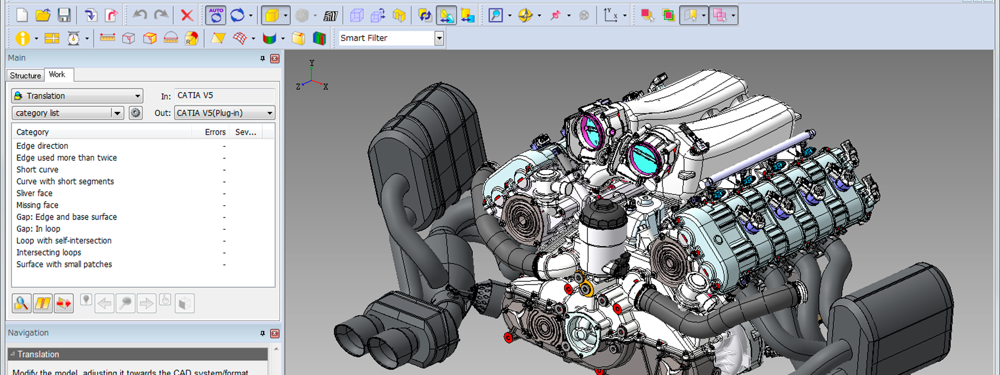

Semana 8
Laboratorio de innovación 2
Jueves 19 de Octubre
Realizamos el diagrama de bloques de cómo es que funciona nuestro proyecto en cuanto al proceso del circuito y nos dieron algunas recomendaciones para mejorar el proyecto.

Sábado 21 de Octubre
Vimos la diferencia entre CAD (Diseño Asistido por Computadora) que sirve para crear diseños en 3D, CAM (Fabricación asistida por computadora) que funciona para automatizar maquinaria de fabricación industrial y CAE (Ingeniería asistida por computadora) que simula el comportamiento que tendría nuestro diseño en distintas situaciones . Al igual, vimos softwares donde se pueden realizar así como sus ventajas y desventajas También vimos sobre las ventajas que trae la fabricación digital así como sus herramientas. Entre ellas están el corte láser, impresoras 3D, el CNC y robots industriales.
